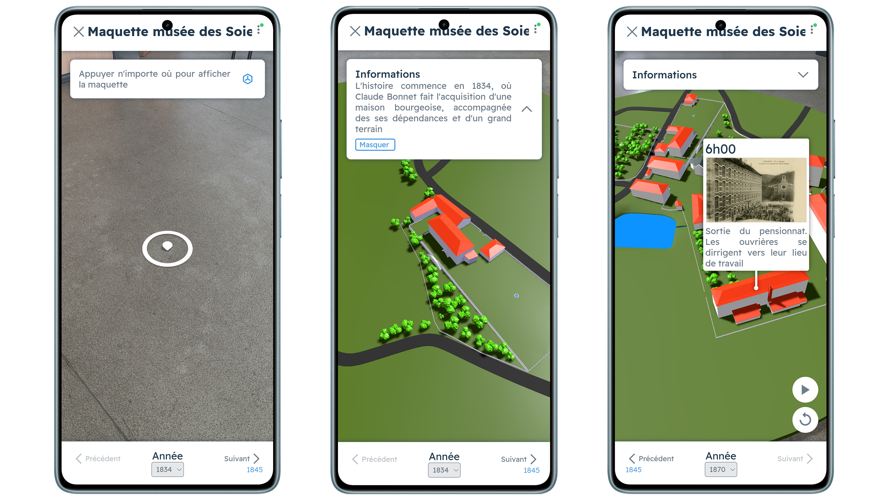
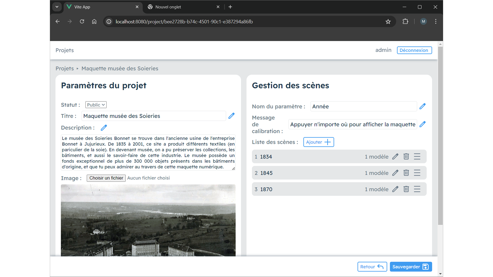
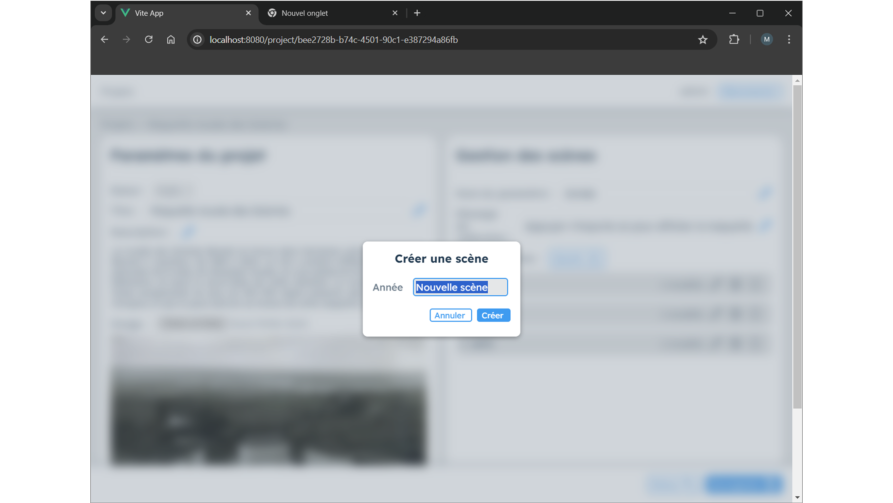

Hera
Création de projets de réalité augmentée no-code




À propos du projet
Hera est une plateforme web développée dans le cadre d’un stage de 2ᵉ année de BUT Informatique, dont l’objectif est de permettre à tout utilisateur, même sans compétences en programmation, de créer et partager des projets en réalité augmentée (AR) à vocation pédagogique.
🎯 Objectifs du projet
- Permettre la création de scènes AR personnalisées sans écrire de code.
- Offrir une visualisation immersive de projets éducatifs à travers une interface AR.
- Rendre les projets accessibles au public, favorisant ainsi le partage de contenus interactifs.
🧩 Fonctionnalités principales
🖼️ Viewer AR
- Accès public aux projets finalisés.
- Affichage AR via WebXR et Three.js.
- Chaque projet est structuré en scènes personnalisables (par exemple : "époque", "couleur", "état").
- Affichage de modèles 3D (.glb/.gltf) et annotations 3D localisées dans la scène.
- Aperçu en simple 3D (sans AR) disponible avec fonctionnalités réduites.
✏️ Éditeur
- Accessible après authentification (login/register).
- Interface intuitive pour :
- Créer un projet (titre, description, image).
- Définir un type de scène (libre : "couleur", "année", etc.).
- Ajouter des scènes contenant :
- Des modèles 3D
- Des annotations
- Un éditeur 3D permettant des déplacer/tourner les éléments
- Fonctionnalités de sauvegarde et de publication vers le viewer.
🧠 Backend (API + base de données)
- API RESTful développée avec Node.js et Express.js.
- Requêtes GET / POST pour interagir avec la base de données (création, modification, lecture de projets, scènes, assets...).
- Base de données SQLite gérée avec Sequelize (ORM).
🧪 Technologies utilisées
- Frontend : Vue.js
- Backend : Node.js, Express.js
- Base de données : SQLite, Sequelize
- AR / 3D : Three.js, WebXR
- Autres : Vite (build frontend), systemd (démarrage serveur), Apache2 (hébergement)
⚙️ Points techniques notables
- Utilisation avancée de Three.js pour la visualisation interactive 3D et AR.
- Architecture REST pour assurer une séparation claire entre frontend et backend.
- Gestion fine des relations complexes avec Sequelize (projets → scènes → assets / annotations).
- Configuration d’un serveur web Apache2 pour héberger plusieurs apps Vue.js simultanément.
- Mise en service du backend via systemd, pour garantir un lancement automatique et une disponibilité continue.